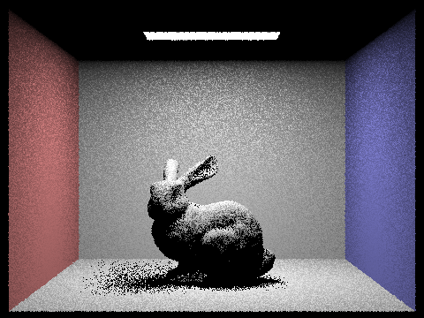

Give a high-level overview of what you implemented in this homework. Think about what you've built as a whole. Share your thoughts on what interesting things you've learned from completing the homework.
Part 1: Ray Generation and Scene Intersection
Walk through the ray generation and primitive intersection parts of the rendering pipeline.
To implement ray generation we first had to translate the normalized image coordinates into Camera space. To do this, we first translated every point
by (-.5,-.5) as the midpoint of the image space (0.5,0,5) corresponded to (0,0,-1) in camera space. We then realized the bottom left and top right corners
were scaled by (tan(hfov/2),tan(vfov/2)) so we also scaled the given (x,y) coordinate by this scalar as well. Another important thing to note is that to get
(0,0) and (1,1) to map to (-tan(hfov/2),-tan(vfov/2), -1) and (tan(hfov/2),tan(vfov/2), -1) after translating by -0.5, we would have to multiply by 2 since
after translating the normalizlied points by -0.5 we would have (-0.5, -0.5) and (0.5,0.5) so to map the points correctly we need to scale them back up
to (-1,-1) and (1,1) in order to get the correct mapping. From there we just normalize the direction vector and we get our ray! As for the primitives,
the intersection functions are called from the primitives (triangles or spheres) themselves so once we find out that the ray intersects the primitive,
we can simply set the primitive attribute of the intersect struct to be "this".
Explain the triangle intersection algorithm you implemented in your own words.
To implement our triangle intersection algorithm, we made use of the Möller Trumbore Algorithm which uses barycentric coordinates
in order to figure out if our ray intersects a triangle. The algorithm is also useful as it will tell us at what t value the ray
intersects the triangle if it even does. Similarly to HW1, we can see if the barycentric weights are all equal or above 1 to figure
out if the ray intersects the triangle. And of course we also need to make sure our t value is within max_t and and min_t to see if
the intersection is even visible to the camera. Finally if we get a valid intersection, we update max_t to make sure later and further
intersections are ignored, compute the intersection normal by interpolating the vertex normals with barycentric weights, and updating
all the other isect struct members.
Show images with normal shading for a few small .dae files.
Image of CBspheres lambertian
Image of CBgems
Here is an example 2x2 gridlike structure using an HTML table. Each tr is a row and each td is a column in that row. You might find this useful for framing and showing your result images in an organized fashion.
Caption goes here.
Caption goes here.
Caption goes here.
Caption goes here.
Part 2: Bounding Volume Hierarchy
Walk through your BVH construction algorithm. Explain the heuristic you chose for picking the splitting point.
Images that can only be rendered with BVH acceleration.
Image of CBspheres lambertian
Image of CBgems
Comparison of rendering times on complex geometries with and without BVH acceleration.
Part 3: Direct Illumination
Our implementation of Uniform direct lighting
To implement the uniform direct lighting, we sample the hemisphere uniformly to get the incoming light vector direction. I will be reffering to
this vector as the sample_vector. We then send a ray from our original hit point (hit_p) and setting its direction to be o2w * sample_vector. We also update its min_t to be EPS_F so
intersections at the origin aren't considered. We convert the sample_vector to world space as we want
the vector to be in object space but rather in world space to see if the ray intersects a light source. From here, we see if this ray intersects the bvh if it does,
we compute how much this sample contributes to the Monte Carlo estimator. We calcualte the bsdf on the w_out and w_in vectors which are
both in object space, the pdf is given by the standard uniform hemisphere pdf which is 1.0 / 2 * PI, and we compute the cos angle by computing the dot
product of the normal and sample_vector. We then repeat this process num_sample times and then normalize the final sum by the number of samples we took
to get the final estimation of light.
Rendered images with Uniform direct lighting
Image of CBbunny with Uniform direct lighting
Image of CBunny with Uniform direct lighting but less rays casted
Our implementation of Importance direct lighting
The implementation of importance direct lighting is similar to the uniform direct lighting with a few
key differences. For one, we let sample_f function do most of the work as it will give us a sample_vector,
the distance to light which helps us upper bound the ray we send and also gives us the distribution of the
sampled vector as it is no longer just uniform over a hemisphere. Another key thing is that we have to sample
ns_area_light times per light vector in the scene unless its a point light in which we just sample it once as
per the spec's suggestion. The final key difference is that instead of checking for intersections, we check if
the ray doesn't have an intersection and we add this to our estimator as the light directly hits the target hit
point.
Rendered images with Importance direct lighting
Image of CBbunny with Importance direct lighting
Image of a Dragon with Importance direct lighting
Rendering of CBbunny with 1, 4, 16, and 64 light rays and 1 sample per pixel

1 Light ray
4 Light rays
16 Light rays
64 Light rays
Noise and Shadow Comparison
Above, we can see clear difference in the amount of noise in the shadows which increases
when less light rays are sent. When 1 light ray is sent, we are majorly undersampling the area
of light as one light ray cannot capture the true lighting of the area. Thus we get a lot of noise
especially in the shadow of the rabbit breast as most of the rays not being accounted for as they are intersecting
an object and thus not being added to the light estimate. We also see a very noticable amount of noise
in the rabbit ears which is also caused by undersampling. Then as we increase to 4 light rays, the amount of noise
in the ear and breast shadow starts to decrease yet they are still noticable. Upping it to 16, we now see
that the noise on the rabbit body is essentialy gone and the shadows become even less noisy. Finally when we
send 64 light rays, we have the best outcome of soft shadows with essentially no noise.
Comparison of results between uniform hemisphere sampling and lighting sampling
The visual differences between the two are quite apparent with lighting sampling being the clear winner.
The uniform hemisphere sampling produces a much more grainy and noisy image. This is most apparent on all the
walls which look very rough and grainy. On the other hand, lighting sampling produces very smooth walls which
in turn make the shadows softer as they aren't being mixed with the grainy walls and floors. And in terms of runtime,
lighting sampling has uniform sampling beat as on our code lighting runs about 20 seconds faster. This is due to the
optimizations we added which included skipping lights that the ray is behind and only sampling point lights one time.
Part 4: Global Illumination
Walk through your implementation of the indirect lighting function.
Show some images rendered with global (direct and indirect) illumination. Use 1024 samples per pixel.
Comparison of only direct vs only indirect illumination at 1024 samples per pixel
Image of CBbunny with Importance direct lighting
Image of a Dragon with Importance direct lighting
Bunny with accumulated light and varying max depth
Level 1 evaluation
Level 2 evaluation
Level 3 evaluation
Level 4 evaluation
Level 5 evaluation
Level 5 evaluation with Bezier Curve
Bunny with unaccumulated light and varying max depth at 1024 samples per pixel
Level 1 evaluation
Level 2 evaluation
Level 3 evaluation
Level 4 evaluation
Level 5 evaluation
Level 5 evaluation with Bezier Curve
Comparison of rendered views of accumulated and unaccumulated bounces for CBbunny.dae at 1024 samples per pixel
Bunny with Russian roulette rendering and varying max depth at 1024 samples per pixel
Level 1 evaluation
Level 2 evaluation
Level 3 evaluation
Level 4 evaluation
Level 5 evaluation
Level 5 evaluation with Bezier Curve
Pick one scene and compare rendered views with various sample-per-pixel rates, including at least 1, 2, 4, 8, 16, 64, and 1024. Use 4 light rays.
Part 5: Adaptive Sampling
Explain adaptive sampling. Walk through your implementation of the adaptive sampling.
Comparison of Two scenes with 2048 samples per pixel